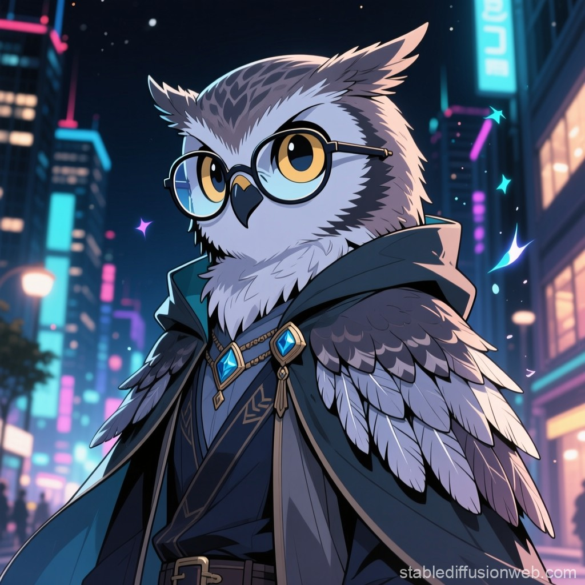

一般的な傾向
フクロウタイプは感性が鋭く、セックスも「演出」や「感覚の探求」として扱う傾向があります。淡い光や音楽、小演出を好み、暗がりでじっくりと相手の反応を観察してから責め方を決める。シチュエーション作りに長けており、ひとつひとつの所作に詩情が漂います。
良い傾向
繊細な気配りと独特の美意識で、相手に深い余韻を残すことができるのが強みです。感覚的な刺激を丁寧に組み立て、単なる肉体的満足ではなく“心地よい陶酔”へと導くことで、忘れられない体験を提供します。
悪い傾向
自分の芸術性や世界観を優先しすぎると、相手は置いてけぼりになりやすい。テンポ感や欲求の素直さを軽視してしまうと、雰囲気は良くても実際の満足度が下がることがあります。理想を押し付ける頑固さが摩擦を生む場合も。